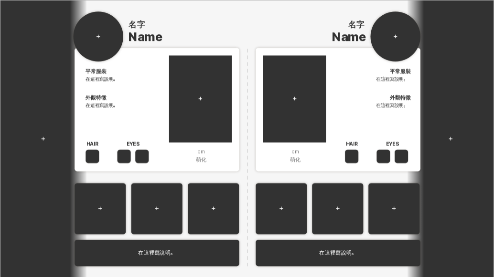
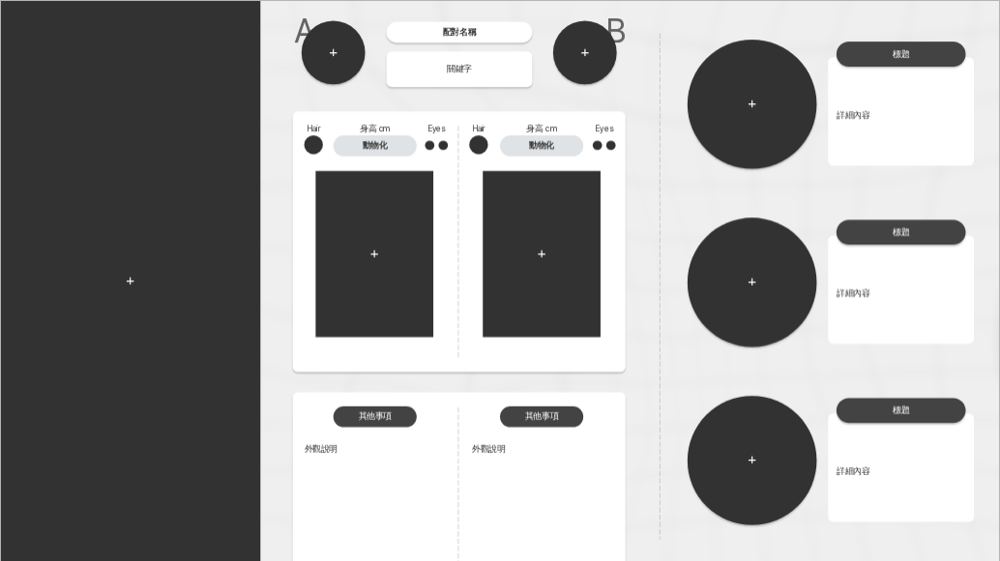
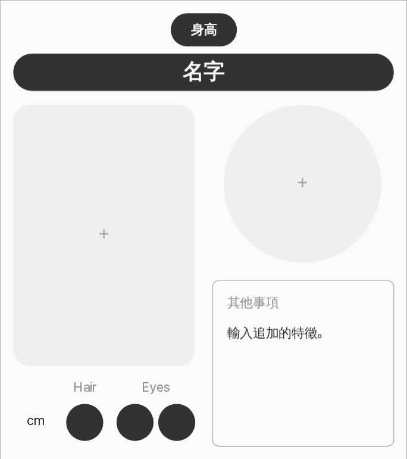
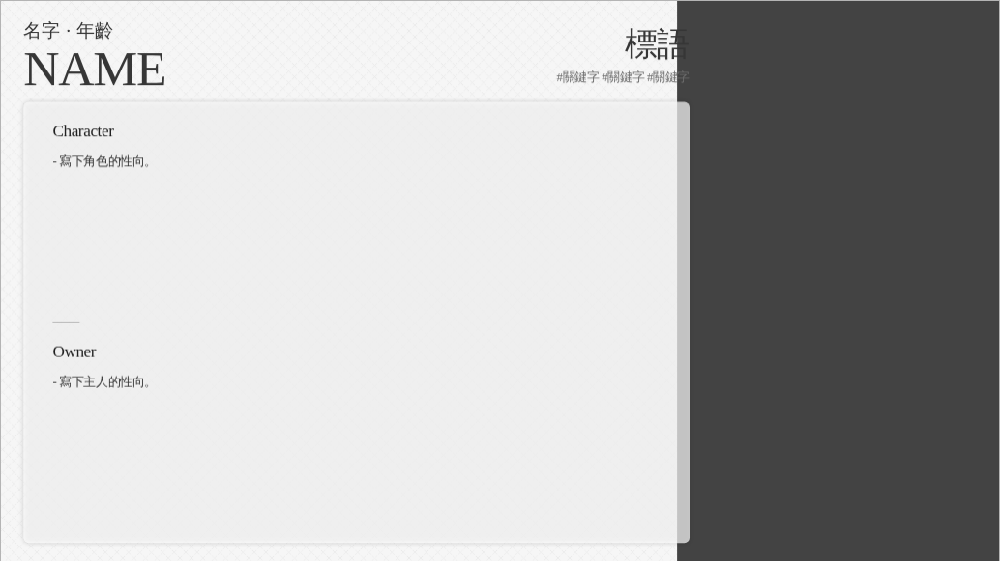

baegop 的介紹圖！
不用修圖軟體，直接把介紹圖填滿吧！
作者一無聊就會再多做一個……

#資料整理 簡易雙人整理
#資料整理 baegop 雙人整理 1 #橫幅 圖樣橫幅
#資料整理 多人資料框（1～30 人）
#置頂推文 置頂推文產生器不用修圖軟體，直接把介紹圖填滿吧！
作者一無聊就會再多做一個……

#資料整理 簡易雙人整理
#資料整理 baegop 雙人整理 1 #橫幅 圖樣橫幅
#資料整理 多人資料框（1～30 人）
#置頂推文 置頂推文產生器